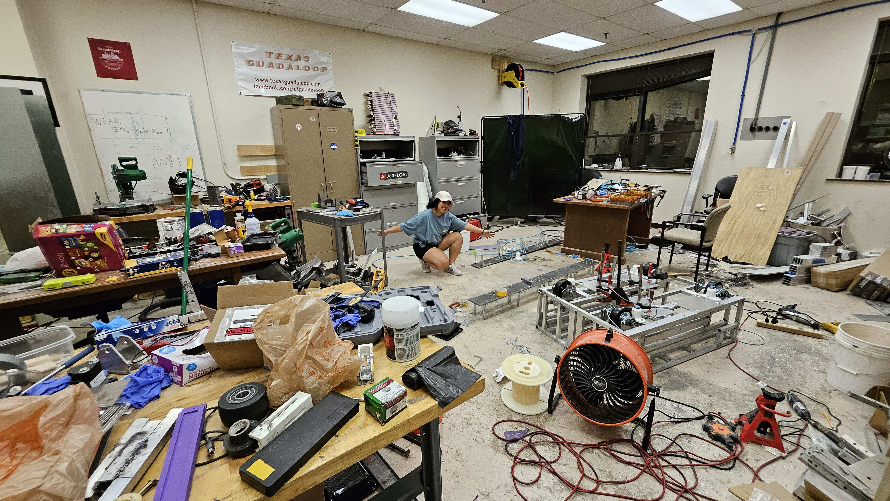

Mentee to Mentor:
President of Texas Guadaloop
From a kid who was bullied for her accent, I never imagined I'd be leading one of UT Austin's most ambitious engineering organizations.

As President of Texas Guadaloop, I learned what effective leadership actually requires — not just vision, but the willingness to sit in the discomfort of interpersonal challenges, unclear priorities, and high stakes with a team that's counting on you. This experience reshaped how I think about teams, systems, and what it means to build something from the ground up.
Where It Began: Freshman Year
I joined Texas Guadaloop as a freshman at UT Austin before I fully understood what I was signing up for. I knew vaguely what hyperloop was — Elon Musk had written a white paper, people were excited, it seemed like the kind of future I wanted to be part of. But I had no idea what it looked like for college students to actually build one.
What I found was a team of people who were genuinely trying to do something that hadn't been done at UT before. Engineers, project managers, business leads, all moving toward a single ambitious goal. I fit in immediately — not because I had relevant skills yet, but because I couldn't imagine not being there.
Over the next couple of years, I showed up. I learned by doing. I took on more responsibility wherever I could find it. Guadaloop became one of the most important communities in my college experience — the place that first showed me what it looked like to build something with people who cared as much as I did.
February 19, 2023
I was in the middle of my co-op internship at Tesla's Gigafactory Texas when I applied to be the next president of Texas Guadaloop. Some people thought that was an odd time to take on more. I thought it was exactly the right time — because Tesla had shown me what a well-run, high-performance organization looks like, and I wanted to bring that back to Guadaloop.
The call came on February 19, 2023. Trevor, the outgoing president, told me I had been selected. I remember exactly where I was. I remember the precise mix of excitement and "okay, what have I done" that hit me at the same time.
I called my family immediately.

My first order of business — literally that same weekend — was reading every single proposal from every VP candidate who had applied for a position on the executive team. I was on a spontaneous trip to New York with a friend when the calls came in, and I remember sitting in a coffee shop reviewing proposals with the Manhattan skyline somewhere outside the window. That's just kind of how my life works.
On March 20, 2023, I ran my first meeting as president. The room was completely full. I had friends there to support me, which helped more than I can explain.
Building from the Ground Up
I approached the presidency the way I'd approach an engineering project: first understand the current state completely, then identify the gaps clearly, then build toward the target state systematically.
That meant 1:1 meetings with every team lead. Listening before deciding. Asking a lot of questions before making any significant changes. I'd seen enough leadership mistakes — including some of my own — to know that moving fast without understanding the terrain is how you create problems instead of solving them.
My priorities, in order:
- Funding. Organizations don't function without resources, and Guadaloop needed both money and the credibility that comes with it. I developed comprehensive budget plans, milestone trackers, and stakeholder presentations built around our technical vision. Over the course of my presidency, we raised $33,000 — not from one big ask, but through consistent relationship-building and demonstrated results.
- Process. I built timelines and milestone frameworks that the team could actually use. One of the things Tesla taught me was that a plan nobody follows isn't a plan — it's a document. The goal was to create structures that made people's work easier, not harder.
- Culture. I ran 1:1 meetings with members across the team. I learned what was working, what wasn't, what people needed that they weren't getting. I tried to make sure every voice was heard — not as a slogan, but as an actual practice.
SXSW 2023: Advocating for the Future
One of the defining moments of my presidency came early: Texas Guadaloop was invited to speak at SXSW 2023. I got to advocate for sustainable transportation to a large, engaged audience — and I had the opportunity to host EuroTube's R&D Director, Lorenzo Benedetti, as part of the event.
I drove Lorenzo to the airport directly from SXSW and went straight to the factory to catch up on Tesla work. That's a sentence that still feels unreal to say. But that's what that season of my life looked like: Tesla by day, Guadaloop in every available hour, SXSW in between.
Standing at that conference representing a technology that could genuinely change how people move through the world — it reminded me exactly why I'd joined Guadaloop in the first place. Not for the résumé line. For the belief that this stuff actually matters.
Presenting to the Dean and Stakeholders
Building Guadaloop also meant learning to speak to people who held institutional power. I presented our work and vision to the Dean, to external stakeholders, and to our executive board — each audience requiring a slightly different framing of the same underlying substance.
I learned to make technical work accessible without dumbing it down. I learned to speak to an audience's interests without losing the integrity of what we were actually building. I learned that asking for what you need clearly and with confidence is a skill that has to be practiced, and that the first few times feel awkward and the tenth time feels normal.
These weren't comfortable skills for me when I started. They became comfortable through repetition — and through being in rooms where I had no choice but to figure it out.
The Human Side of Leadership
Nobody briefs you on the interpersonal side of running a student organization. The technical milestones are measurable. The funding goals have numbers. But navigating team dynamics — when someone feels overlooked, when communication breaks down, when two people need to work closely together and can't seem to find a rhythm — that's the part that doesn't come with a playbook.
I learned more about people management in my time as president than in any course I've taken. Empathy isn't a soft skill — it's a precision instrument. Active listening changes outcomes. And sometimes the most important thing you can do for a team member is simply tell them, sincerely and specifically, that their work matters.
I started applying that last one everywhere. A direct manager had done it for me at Tesla — an out-of-nowhere "you're doing a fantastic job" that pushed me harder than any formal review ever had. I tried to pay that forward every week as president.
The End of a Chapter: September 2024
My term as president ended in September 2024. I handed the organization to a team I was genuinely proud of, with stronger funding, clearer processes, and a culture I had worked hard to build — and harder to maintain.

Someone told me once that the measure of a good leader isn't whether things fall apart when they leave. It's whether the organization is stronger than when they arrived. I believe we got there. I'm proud of the people who stayed and kept building after I passed the torch, because ultimately that's the whole point — not what you build while you're there, but what you make possible for everyone who comes after.
Texas Guadaloop changed my life when I was a freshman who didn't yet know what she was capable of. I hope I gave something back to the next cohort of people who walk in feeling the same way.